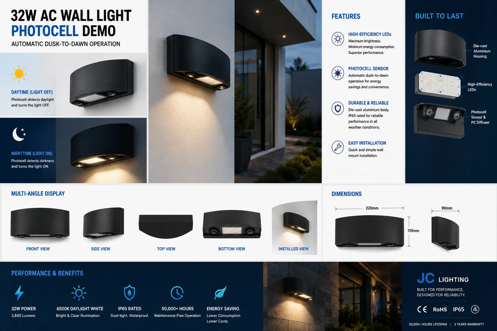

PIR 人体感应墙灯
用于周界围墙与商业物业的防破坏太阳能墙灯——由双 PIR 传感器触发的 800 流明照明,IP65 密封,4000mAh 磷酸铁锂电池供电。

这是为围墙和建筑周界打造的灯具——既看重安防、又面临被破坏的风险。坚固的低矮外壳抗破坏,双 PIR 传感器把探测范围扩大到 8–12 m,让入口或院落范围内的移动可靠触发亮灯。自带磷酸铁锂电池,在停电与拉闸限电时也保持戒备。
规格参数
| 光通量 | 800 lm |
|---|---|
| 运动传感器 | 双 PIR,8–12 m 探测 |
| IP 防护等级 | IP65——防尘、防喷水 |
| 电池 | 4000mAh 磷酸铁锂 |
| 续航时间 | 每次充电 8–12 小时 |
| 结构 | 防破坏外壳,壁装 |
| 认证 | CE + RoHS |
| 定制 | OEM / ODM——logo、包装、规格调整 |
为什么选它
双 PIR 覆盖。两个传感器相比单 PIR 扩大了触发区——墙线上的盲区更少。
防破坏结构。专为商业与住宅安防场景中暴露的围墙设计。
磷酸铁锂可靠耐用。2,000+ 次循环、耐高温,可在户外服役数年。为什么电池化学很关键 →
已认证、支持 OEM。每份报价附 CE + RoHS 证书;可定制品牌与包装。
为这些市场而建南非、拉美及离网非洲的住宅小区、学校和商业厂区——永不依赖电网的周界安防。